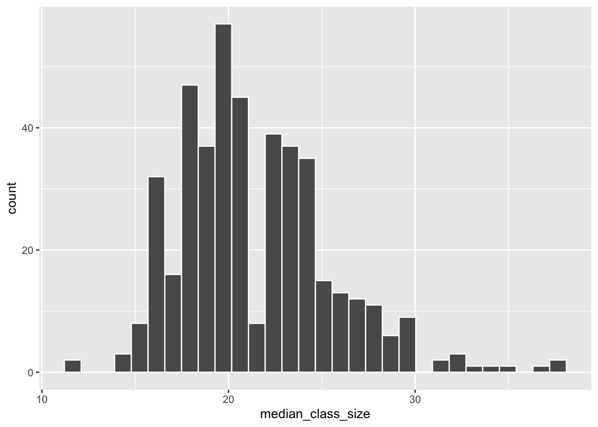

Code
student class
1 A STAT 101
2 B GEOL 101
3 C ANTH 101Where are we? Data preparation

Thus far, we’ve learned how to:
arrange() our data in a meaningful orderfilter() the rows and select() the columns of interestmutate() existing variables and define new variablessummarize() various aspects of a variable, both overall and by group (group_by())pivot_longer(), pivot_wider())In practice, we often have to collect and combine data from various sources in order to address our research questions. Example:
Consider the following (made up) data on students and course enrollments:
student class
1 A STAT 101
2 B GEOL 101
3 C ANTH 101 class enrollment
1 STAT 101 18
2 ART 101 17
3 GEOL 101 24Our goal is to combine or join these datasets into one. For reference, here they are side by side:

First, consider the following:
What variable or key do these datasets have in common? Thus by what information can we match the observations in these datasets?
Relative to this key, what info does students_1 have that enrollments_1 doesn’t?
Relative to this key, what info does enrollments_1 have that students_1 doesn’t?
left, inner, full
There are various ways to join these datasets:
Let’s learn by doing. First, try the left_join() function:
── Attaching core tidyverse packages ──────────────────────── tidyverse 2.0.0 ──
✔ dplyr 1.1.4 ✔ readr 2.1.5
✔ forcats 1.0.0 ✔ stringr 1.5.1
✔ ggplot2 3.5.1 ✔ tibble 3.2.1
✔ lubridate 1.9.4 ✔ tidyr 1.3.1
✔ purrr 1.0.2
── Conflicts ────────────────────────────────────────── tidyverse_conflicts() ──
✖ dplyr::filter() masks stats::filter()
✖ dplyr::lag() masks stats::lag()
ℹ Use the conflicted package (<http://conflicted.r-lib.org/>) to force all conflicts to become errorsJoining with `by = join_by(class)` student class enrollment
1 A STAT 101 18
2 B GEOL 101 24
3 C ANTH 101 NAWhat did this do? What are the roles of students_1 (the left table) and enrollments_1 (the right table)?
What, if anything, would change if we reversed the order of the data tables? Think about it, then try.
Next, explore how our datasets are joined using inner_join():
Joining with `by = join_by(class)` student class enrollment
1 A STAT 101 18
2 B GEOL 101 24What did this do? What are the roles of students_1 (the left table) and enrollments_1 (the right table)?
What, if anything, would change if we reversed the order of the data tables? Think about it, then try.
Next, explore how our datasets are joined using full_join():
Joining with `by = join_by(class)` student class enrollment
1 A STAT 101 18
2 B GEOL 101 24
3 C ANTH 101 NA
4 <NA> ART 101 17What did this do? What are the roles of students_1 (the left table) and enrollments_1 (the right table)?
What, if anything, would change if we reversed the order of the data tables? Think about it, then try.
Mutating joins add new variables (columns) to the left data table from matching observations in the right table:
left_data |> mutating_join(right_data)
The most common mutating joins are:
left_join()
Keeps all observations from the left, but discards any observations in the right that do not have a match in the left.1
inner_join()
Keeps only the observations from the left with a match in the right.
full_join()
Keeps all observations from the left and the right. (This is less common than left_join() and inner_join()).
NOTE: When an observation in the left table has multiple matches in the right table, these mutating joins produce a separate observation in the new table for each match.
semi, anti
Mutating joins combine information, thus increase the number of columns in a dataset (like mutate()). Filtering joins keep only certain observations in one dataset (like filter()), not based on rules related to any variables in the dataset, but on the observations that exist in another dataset. This is useful when we merely care about the membership or non-membership of an observation in the other dataset, not the raw data itself.
In our example data, suppose enrollments_1 only included courses being taught in the Theater building:
Joining with `by = join_by(class)` student class
1 A STAT 101
2 B GEOL 101semi_join() differ from inner_join()?Let’s try another filtering join for our example data:
Joining with `by = join_by(class)` student class
1 C ANTH 101Filtering joins keep specific observations from the left table based on whether they match an observation in the right table.
semi_join()
Discards any observations in the left table that do not have a match in the right table. If there are multiple matches of right cases to a left case, it keeps just one copy of the left case.
anti_join()
Discards any observations in the left table that do have a match in the right table.

Define two new datasets, with different students and courses:
student class
1 D COMP 101
2 E BIOL 101
3 F POLI 101 course enrollment
1 ART 101 18
2 BIOL 101 20
3 COMP 101 19To connect the course enrollments to the students’ courses, try do a left_join(). You get an error! Identify the problem by reviewing the error message and the datasets we’re trying to join.
The problem is that course name, the key or variable that links these two datasets, is labeled differently: class in the students_2 data and course in the enrollments_2 data. Thus we have to specify these keys in our code:
student class enrollment
1 D COMP 101 19
2 E BIOL 101 20
3 F POLI 101 NADefine another set of fake data which adds grade information:
student class grade
1 Y COMP 101 B
2 Y BIOL 101 S
3 Z POLI 101 C
4 Z COMP 101 A class grade enrollment
1 ART 101 B 20
2 BIOL 101 A 18
3 COMP 101 A- 19Try doing a left_join() to link the students’ classes to their enrollment info. Did this work? Try and figure out the culprit by examining the output.
The issue here is that our datasets have 2 column names in common: class and grade. BUT grade is measuring 2 different things here: individual student grades in students_3 and average student grades in enrollments_3. Thus it doesn’t make sense to try to join the datasets with respect to this variable. We can again solve this by specifying that we want to join the datasets using the class variable as a key. What are grade.x and grade.y?
Before applying these ideas to bigger datasets, let’s practice identifying which join is appropriate in different scenarios. Define the following fake data on voters (people who have voted) and contact info for voting age adults (people who could vote):
id times_voted
1 A 2
2 D 4
3 E 17
4 F 6
5 G 20 name address age
1 A summit 24
2 B grand 89
3 C snelling 43
4 D fairview 38Use the appropriate join for each prompt below. In each case, think before you type:
name address age
1 B grand 89
2 C snelling 43 name address age
1 A summit 24
2 D fairview 38 name address age times_voted
1 A summit 24 2
2 B grand 89 NA
3 C snelling 43 NA
4 D fairview 38 4
5 E <NA> NA 17
6 F <NA> NA 6
7 G <NA> NA 20 id times_voted address age
1 A 2 summit 24
2 D 4 fairview 38Let’s apply these ideas to some bigger datasets. In grades, each row is a student-class pair with information on:
sid = student IDgrade = student’s gradesessionID = an identifier of the class section sid grade sessionID
1 S31185 D+ session1784
2 S31185 B+ session1785
3 S31185 A- session1791
4 S31185 B+ session1792
5 S31185 B- session1794
6 S31185 C+ session1795In courses, each row corresponds to a class section with information on:
sessionID = an identifier of the class sectiondept = departmentlevel = course level (eg: 100)sem = semesterenroll = enrollment (number of students)iid = instructor ID sessionID dept level sem enroll iid
1 session1784 M 100 FA1991 22 inst265
2 session1785 k 100 FA1991 52 inst458
3 session1791 J 100 FA1993 22 inst223
4 session1792 J 300 FA1993 20 inst235
5 session1794 J 200 FA1993 22 inst234
6 session1795 J 200 SP1994 26 inst230Use R code to take a quick glance at the data.
'data.frame': 5844 obs. of 3 variables:
$ sid : chr "S31185" "S31185" "S31185" "S31185" ...
$ grade : chr "D+" "B+" "A-" "B+" ...
$ sessionID: chr "session1784" "session1785" "session1791" "session1792" ...'data.frame': 1718 obs. of 6 variables:
$ sessionID: chr "session1784" "session1785" "session1791" "session1792" ...
$ dept : chr "M" "k" "J" "J" ...
$ level : int 100 100 100 300 200 200 200 100 300 100 ...
$ sem : chr "FA1991" "FA1991" "FA1993" "FA1993" ...
$ enroll : int 22 52 22 20 22 26 25 38 16 43 ...
$ iid : chr "inst265" "inst458" "inst223" "inst235" ...How big are the classes?
Before digging in, note that some courses are listed twice in the courses data:
sessionID n
1 session2047 2
2 session2067 2
3 session2448 2
4 session2509 2
5 session2541 2
6 session2824 2
7 session2826 2
8 session2862 2
9 session2897 2
10 session3046 2
11 session3057 2
12 session3123 2
13 session3243 2
14 session3257 2
15 session3387 2
16 session3400 2
17 session3414 2
18 session3430 2
19 session3489 2
20 session3524 2
21 session3629 2
22 session3643 2
23 session3821 2If we pick out just 1 of these, we learn that some courses are cross-listed in multiple departments:
sessionID dept level sem enroll iid
1 session2047 g 100 FA2001 12 inst436
2 session2047 m 100 FA2001 28 inst436For our class size exploration, obtain the total enrollments in each sessionID, combining any cross-listed sections. Save this as courses_combined. NOTE: There’s no joining to do here!
tibble [1,695 × 2] (S3: tbl_df/tbl/data.frame)
$ sessionID: chr [1:1695] "session1784" "session1785" "session1791" "session1792" ...
$ enroll : int [1:1695] 22 52 22 20 22 26 25 38 16 43 ...# A tibble: 6 × 2
sessionID enroll
<chr> <int>
1 session1784 22
2 session1785 52
3 session1791 22
4 session1792 20
5 session1794 22
6 session1795 26Let’s first examine the question of class size from the administration’s viewpoint. To this end, calculate the median class size across all class sections. (The median is the middle or 50th percentile. Unlike the mean, it’s not skewed by outliers.) THINK FIRST:
courses_combined not courses.But how big are classes from the student perspective? To this end, calculate the median class size for each individual student. Once you have the correct output, store it as student_class_size. THINK FIRST:
courses_combined not courses. sid grade sessionID
1 S31185 D+ session1784
2 S31185 B+ session1785
3 S31185 A- session1791
4 S31185 B+ session1792
5 S31185 B- session1794
6 S31185 C+ session1795# A tibble: 6 × 2
sessionID enroll
<chr> <int>
1 session1784 22
2 session1785 52
3 session1791 22
4 session1792 20
5 session1794 22
6 session1795 26# A tibble: 6 × 2
sid median_class_size
<chr> <dbl>
1 S31185 23.5
2 S31188 21
3 S31191 25
4 S31194 15
5 S31197 24
6 S31200 21 The median class size varies from student to student. To get a sense for the typical student experience and range in student experiences, construct and discuss a histogram of the median class sizes experienced by the students.
sid grade sessionID
1 S31185 D+ session1784
2 S31185 B+ session1785
3 S31185 A- session1791
4 S31185 B+ session1792
5 S31185 B- session1794
6 S31185 C+ session1795`stat_bin()` using `bins = 30`. Pick better value with `binwidth`.
Show data on the students that enrolled in session1986. THINK FIRST: Which of the 2 datasets do you need to answer this question? One? Both?
Below is a dataset with all courses in department E:
What students enrolled in classes in department E? (We just want info on the students, not the classes.)
sid grade sessionID
1 S31245 A session2326
2 S31470 B session3658
3 S31470 B session3798
4 S31470 A session3799
5 S31938 A session2326
6 S31968 A session3104
7 S32022 A session3798
8 S32046 A- session2326
9 S32226 A session2326
10 S32415 B session2835
11 S32415 B+ session3799
12 S32484 A- session3658Use all of your wrangling skills to answer the following prompts! THINK FIRST:
# A tibble: 15 × 2
grade gp
<chr> <dbl>
1 A+ 4.3
2 A 4
3 A- 3.7
4 B+ 3.3
5 B 3
6 B- 2.7
7 C+ 2.3
8 C 2
9 C- 1.7
10 D+ 1.3
11 D 1
12 D- 0.7
13 NC 0
14 AU NA
15 S NA How many total student enrollments are there in each department? Order from high to low.
Joining with `by = join_by(sessionID)`Warning in left_join(left_join(courses_combined, courses, join_by(sessionID == : Detected an unexpected many-to-many relationship between `x` and `y`.
ℹ Row 57 of `x` matches multiple rows in `y`.
ℹ Row 1931 of `y` matches multiple rows in `x`.
ℹ If a many-to-many relationship is expected, set `relationship =
"many-to-many"` to silence this warning.# A tibble: 40 × 2
dept total_in_dept
<chr> <int>
1 d 15526
2 m 11918
3 j 10198
4 M 9503
5 G 8733
6 F 8357
7 W 7629
8 D 7535
9 O 6327
10 C 6045
# ℹ 30 more rowsWhat’s the grade-point average (GPA) for each student?
Joining with `by = join_by(grade)`# A tibble: 443 × 2
sid gpa
<chr> <dbl>
1 S31185 2.41
2 S31188 NA
3 S31191 NA
4 S31194 3.36
5 S31197 3.35
6 S31200 2.2
7 S31203 3.82
8 S31206 2.46
9 S31209 NA
10 S31212 3.67
# ℹ 433 more rowsWhat’s the median GPA across all students?
What fraction of grades are below B+?
Rows: 5,844
Columns: 3
$ sid <chr> "S31185", "S31185", "S31185", "S31185", "S31185", "S31185", …
$ grade <chr> "D+", "B+", "A-", "B+", "B-", "C+", "B-", "NC", "C", "C+", "…
$ sessionID <chr> "session1784", "session1785", "session1791", "session1792", …Joining with `by = join_by(grade)`# A tibble: 3 × 2
# Groups: less_than_BPlus [3]
less_than_BPlus n
<lgl> <int>
1 FALSE 3890
2 TRUE 1539
3 NA 415What’s the grade-point average for each instructor? Order from low to high.
Joining with `by = join_by(sessionID)`Warning in left_join(grades, courses): Detected an unexpected many-to-many relationship between `x` and `y`.
ℹ Row 64 of `x` matches multiple rows in `y`.
ℹ Row 807 of `y` matches multiple rows in `x`.
ℹ If a many-to-many relationship is expected, set `relationship =
"many-to-many"` to silence this warning.Joining with `by = join_by(grade)`# A tibble: 364 × 2
iid grade_point_average
<chr> <dbl>
1 inst265 1.3
2 inst444 1.7
3 inst513 1.85
4 inst200 2
5 inst507 2.2
6 inst445 2.3
7 inst420 2.6
8 inst262 2.65
9 inst176 2.66
10 inst234 2.7
# ℹ 354 more rowsCHALLENGE: Estimate the grade-point average for each department, and sort from low to high. NOTE: Don’t include cross-listed courses. Students in cross-listed courses could be enrolled under either department, and we do not know which department to assign the grade to. HINT: You’ll need to do multiple joins.
students_1
students_1 (the left table) were retained? All of them.enrollments_1 (the right table) were retained? Only STAT and GEOL, those that matched the students.Which observations from students_1 (the left table) were retained? A and B, only those with enrollment info.
Which observations from enrollments_1 (the right table) were retained? STAT and GEOL, only those with studen info.
What, if anything, would change if we reversed the order of the data tables? Think about it, then try. Same info, different column order.
students_1 (the left table) were retained? Allenrollments_1 (the right table) were retained? Allstudents_1 (the left table) were retained? Only those with enrollment info.enrollments_1 (the right table) were retained? None.students_1 (the left table) were retained? Only C, the one without enrollment info.enrollments_1 (the right table) were retained? None. name address age
1 B grand 89
2 C snelling 43 name address age
1 A summit 24
2 D fairview 38 name address age times_voted
1 A summit 24 2
2 B grand 89 NA
3 C snelling 43 NA
4 D fairview 38 4
5 E <NA> NA 17
6 F <NA> NA 6
7 G <NA> NA 20 id times_voted address age
1 A 2 summit 24
2 D 4 fairview 38
3 E 17 <NA> NA
4 F 6 <NA> NA
5 G 20 <NA> NA
6 B NA grand 89
7 C NA snelling 43 id times_voted address age
1 A 2 summit 24
2 D 4 fairview 38
3 E 17 <NA> NA
4 F 6 <NA> NA
5 G 20 <NA> NAThere is also a right_join() that adds variables in the reverse direction from the left table to the right table, but we do not really need it as we can always switch the roles of the two tables.︎↩︎